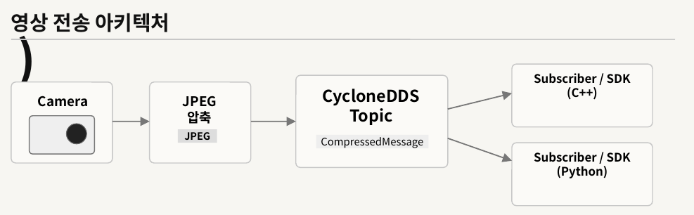
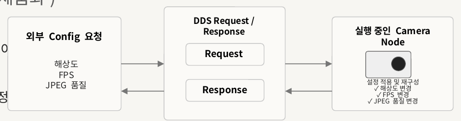
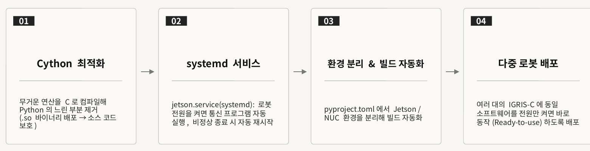

Real-time Camera Streaming for the IGRIS-C Humanoid
TL;DR
At ROBROS I owned the camera communication system of IGRIS-C, a humanoid robot that ROBROS sells. I built it end to end: the video message format, the CycloneDDS publishers and subscribers in Python and C++, the network setup that carries video across wired LAN and Wi-Fi, a service for changing camera settings while the robot runs, and the packaging that starts everything automatically when the robot is switched on. The result is not a research prototype: it is part of the Camera API in IGRIS-C's public SDK.
At a glance
- Role
- Software Intern, development team
- Scope
- design, optimization and deployment of the distributed camera communication system on IGRIS-C
- Cameras
- RealSense D435 (RGB and depth), the head stereo camera, and a camera on each hand (end-effector)
- Stack
- CycloneDDS · Python · C++ · IDL · JPEG compression · Linux networking · systemd · Cython
- Outcome
- shipped in the IGRIS-C public SDK Camera API; deployed to multiple IGRIS-C robots
The problem
IGRIS-C has cameras spread over its body (head and both hands), and the compute boards that produce and consume the video (a Jetson and NUCs) are physically separate. Three things had to be solved:
- Real-time, low-latency transport of large video streams from several cameras at once.
- A stable mixed network: video had to cross wired LAN and Wi-Fi (and an access-point mode) without drops.
- Field deployability: the robot should work as soon as it is powered on, with no manual setup.
When I started, the existing Python CycloneDDS send/receive code did not work at all.
What I built
1. Getting CycloneDDS streaming working on the robot
- Problem
- the existing Python publish/subscribe code did not run, so no data moved between the Jetson and the NUC.
- What I did
- diagnosed it layer by layer, from the network stack down to library paths. I raised the OS kernel socket buffer limits that were blocking real-time traffic, fixed shared-library loading by correcting
LD_LIBRARY_PATH, and fixed the IDL compile errors structurally by building the IDL compiler (idlc) inside the CMake build instead of relying on a separately installed one. - Outcome
- Jetson-to-NUC communication over LAN worked, which became the base for everything else.
2. Video message format and JPEG pipeline (Python + C++)
- Problem
- there was no message type for sending camera images, and raw frames from several cameras are heavy on bandwidth.
- What I did
- designed a dedicated image message schema in IDL, modeled on ROS message types, and implemented the senders and receivers in both Python and C++. Frames are JPEG-compressed before they are published, which cuts bandwidth. I added a sequence number to the message header and frame-check fields to the publish and subscribe code, so the receiver can tell when a frame was dropped.
- Outcome
- RGB/depth and stereo images streamed in real time. The design carried over into the SDK's
CompressedMessagetopic structure, with one topic per stream (d435_color,d435_depth,eyes_stereo,left_hand,right_hand).

3. Crossing wired and wireless networks (bridge, routing, NAT)
- Problem
- NUC-to-NUC over Wi-Fi worked, but a path that mixed LAN and Wi-Fi failed, and the bridge machine silently dropped packets between the two networks.
- What I did
- Switched to a re-publish design: the Jetson sends to a NUC acting as a bridge, and the bridge re-publishes to the client NUC.
- Fixed node identification on Wi-Fi by pinning each node's own network interface in the CycloneDDS XML config (
NetworkInterfaceAddress). - Traced the bridge's packet loss to the firewall and Linux kernel security filtering. I resolved it by relaxing those filters, enabling IP forwarding, setting up NAT, and controlling the routing table directly with
ip route. - Rewrote the route scripts on the Jetson, bridge and client so each interface's gateway and route priority are set deterministically, which prevents routing-table conflicts.
- Outcome
- video reached the client across LAN + Wi-Fi, and later in access-point mode as well.
4. Zero-touch network configuration
- Problem
- routes and IPs were typed by hand in each terminal. The bridge's IP changes from network to network, and switching between Wi-Fi and access-point mode broke the routes.
- What I did
- Tried NetworkManager Dispatcher scripts triggered on interface up/down. They caused routing-table conflicts, so I replaced them with logic that resets the IP tables and routes on every Wi-Fi/AP switch.
- In AP mode, put the Jetson–NUC link and the NUC–NUC link on separate subnets so traffic doesn't collide.
- Made the client find the bridge on its own by matching its MAC address against the active network range.
- Generated the IP settings and the CycloneDDS XML automatically for whatever machine the code runs on.
- Outcome
- no manual network setup. Streaming worked in both Wi-Fi and AP mode and on a new Jetson.
5. UDP buffer tuning
- Problem
- high-resolution frames overflowed the UDP socket buffers, causing intermittent frame drops.
- What I did
- measured the kernel's receive limits under real traffic and raised the UDP buffer size to fit the load, together with CycloneDDS network settings (bandwidth, socket buffers).
- Outcome
- a steady data flow at high resolution.
6. Runtime camera configuration service
- Problem
- resolution and frame rate were hard-coded, so every change meant editing code and rebuilding.
- What I did
- moved the camera settings into config files that are parsed at startup. I then built a CycloneDDS request/response service so resolution, FPS and JPEG quality can be changed from outside while the camera node is running, and the node reconfigures itself. I ran repeated streaming tests over many resolution/FPS combinations to find the best balance between latency and image quality.
- Outcome
- camera settings can be tuned in the field without a rebuild. The service became the SDK's camera config API: per-camera request types (
RealsenseConfigRequest,StereoConfigRequest,MonoConfigRequest), each answered with aServiceResponse.

7. Concurrency: per-camera threads and async callbacks
- Problem
- processing several camera streams in one flow created bottlenecks, and a slow stream could hold up the others.
- What I did
- gave each camera its own thread (receiver → decoder → queue) so the streams run independently. I also moved data handling to a callback-listener pattern, which makes processing event-driven and asynchronous and reduces coupling between modules.
- Outcome
- multiple cameras stream at the same time without losing frames. The design also uses CPU time more efficiently.
8. Choosing the middleware: evaluating and removing Zenoh
- Problem
- connections over the mixed network were unstable at one point, so I evaluated Zenoh as an alternative.
- What I did
- brought Zenoh into the system and tested it. After code review I re-checked transport stability and resource use in the real setup. Tuned CycloneDDS alone met the requirements, so I removed the Zenoh dependency to keep one middleware and avoid library compatibility issues, then ran the full integration tests on CycloneDDS only.
- Outcome
- a simpler stack with one middleware, verified end to end, including the multithreaded streams and the Cython-compiled modules together.
9. Auto-start with systemd
- Problem
- the system had to start without anyone logging in, and recover when it crashed.
- What I did
- wrote a systemd unit (
jetson.service) that starts the communication nodes at boot, restarts them after an abnormal exit, and sets their resource priority. The service hit library paths that resolved differently under pixi and under the system, so I fixed the environment variables and executable paths in the unit file. - Outcome
- power on the robot and the camera system comes up on its own.
10. Cython packaging
- Problem
- pure-Python middleware modules carried interpreter overhead on large image data, and shipping plain scripts exposes the source.
- What I did
- compiled the compute-heavy core logic into C extension modules (
.so) with Cython and packaged the system for installation. - Outcome
- faster runtime execution of the core path, and the product ships as binaries, which protects ROBROS's source code.
11. Split builds for Jetson and NUC
- Problem
- dependencies, CycloneDDS in particular, have to be built differently on each type of machine.
- What I did
- separated the Jetson and NUC environments in
pyproject.tomland branched the CycloneDDS installation step for each. - Outcome
- one codebase that installs correctly on both machine types without hand-syncing environments.
12. Multi-robot deployment
- Problem
- the software had to run the same way on more than one robot.
- What I did
- ported the system to new hardware and tested it there. I also debugged an SSD that a cloned Jetson failed to recognize, checking each stage from the file system to the bootloader configuration.
- Outcome
- the same software is deployed to multiple IGRIS-C robots and works as soon as each one is powered on.

13. SDK integration, code review and handover
- Applied code-review feedback, refactored fragmented early code into cleaner interfaces with fewer cross-module dependencies, and wrote documentation covering installation, operation, the Jetson–NUC network setup, CycloneDDS tuning parameters and troubleshooting cases, so the next engineer could run the system without trial and error.
- The camera data topics and the config service are part of the Camera API in IGRIS-C's public SDK.
Results
- Real-time multi-camera streaming on a real humanoid robot, over LAN, Wi-Fi and access-point mode, reproduced on new hardware.
- Deployed to multiple IGRIS-C robots, ready to use at power-on.
- Shipped in IGRIS-C's public SDK Camera API: the camera topics (
CompressedMessage) and the camera config service. - Internship evaluation: 100 / 100. Attendance: 69 days, 0 absences.
My role / contributions
- Took the camera communication system on IGRIS-C from 0 to 1: a multi-camera, real-time CycloneDDS system.
- Designed the image message schema and implemented it in both Python and C++, with JPEG compression and per-frame sequence numbers.
- Designed and built the runtime camera config service (request/response), which became the SDK config API.
- Debugged across the full stack: build chain (
idlcin CMake), OS kernel (socket and UDP buffers), and networking (IP forwarding, NAT, routing). - Automated network setup (mode-switch route reset, MAC-based bridge discovery, generated DDS XML).
- Added per-camera multithreading and a callback-listener async design.
- Made the middleware decision (evaluated Zenoh, consolidated on CycloneDDS).
- Turned research-style code into a shipped product: Cython
.sopackaging, systemd auto-start, Jetson/NUC build split, multi-robot deployment. - Wrote the install, operations and troubleshooting docs and handed the system over.
Tech stack
- Middleware
- CycloneDDS (Pub/Sub and request/response), IDL /
idlc; Zenoh (evaluated, removed) - Languages
- Python, C++, Cython
- Media
- JPEG compression
- Systems
- Linux networking (IP forwarding, NAT,
ip route, NetworkManager), kernel and UDP socket buffer tuning, systemd - Build/packaging
- CMake, pixi,
pyproject.toml - Hardware platform
- IGRIS-C humanoid; Jetson and NUC computers; RealSense, stereo and hand cameras
Why it matters to me
Building a real-time data pipeline on edge devices taught me how much performance depends on the system around the model: memory, I/O, networking and deployment. That ties directly into my work on on-device AI inference optimization.